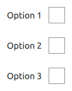
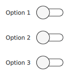
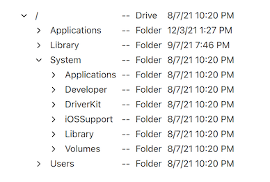

Delegate Controls
Qt Quick Controls offers a selection of controls that are used as delegates in views.
Item delegate with a check indicator that can be toggled on or off | |
Basic item delegate that can be used in various views and controls | |
Exclusive item delegate with a radio indicator that can be toggled on or off | |
Swipable item delegate | |
Item delegate with a switch indicator that can be toggled on or off | |
A delegate that can be assigned to a TreeView |
Each type of delegate has its own specific target use case. The following sections offer guidelines for choosing the appropriate type of delegate, depending on the use case.
CheckDelegate Control

CheckDelegate presents a checkable control that can be toggled on (checked) or off (unchecked). Check delegates are typically used to select one or more options from a set of options.
See also CheckBox Control.
ItemDelegate Control
ItemDelegate presents a checkable control that can be pressed and clicked by the user.
RadioDelegate Control

RadioDelegate presents a checkable control that can be toggled on (checked) or off (unchecked). Radio delegates are typically used to select one option from a set of options.
See also RadioButton Control.
SwipeDelegate Control
SwipeDelegate presents a view item that can be swiped left or right to expose more options or information.
SwitchDelegate Control

SwitchDelegate presents a switchable delegate that can be toggled on or off.
See also Switch Control.
TreeViewDelegate Control

A TreeViewDelegate is a delegate that can be assigned to the delegate property of a TreeView.
See also TreeView.